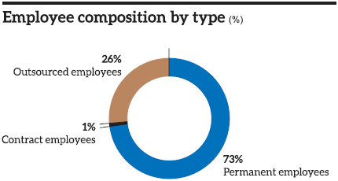
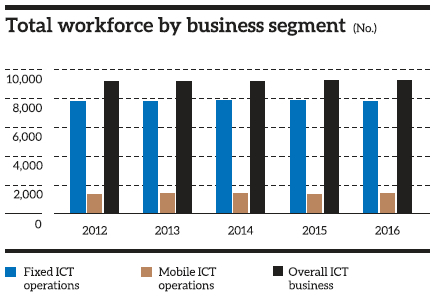
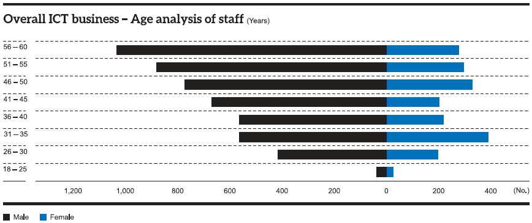
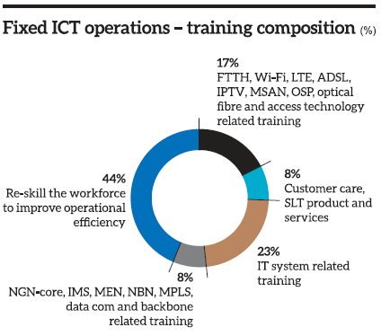
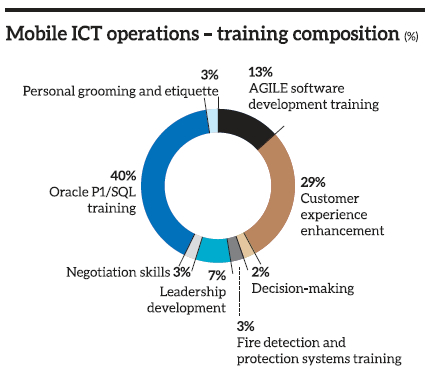
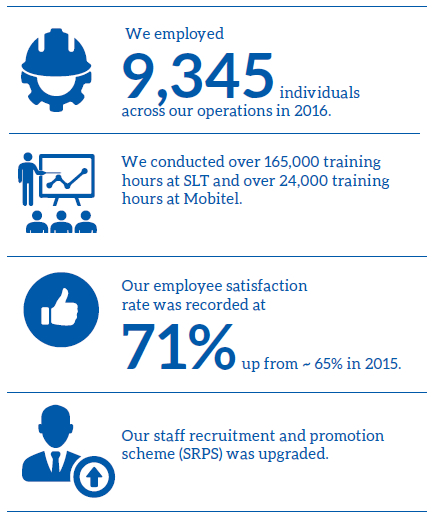

Our employees are the foundation of our operations. We take pride in their contributions and are inspired by their performance and progress.
Human Resources Policy
During the last year, we changed most of our policies to align with our business plan. We modified our performance evaluation system to improve employee satisfaction and to create a more passionate workforce within the Organisation.
We wanted to give a new face to the staff recruitment and promotion scheme (SPRS). This will keep the organisation in compliance with its business requirement, supporting consistent treatment of staff, fairness and transparency. Any promotions and employee rewards will consequently be based on these.
We introduced a new transfer policy at the end of 2016, which will see its benefits in the coming years.
Through the integration of SLT’s activities with those of Mobitel, we will experience exciting new developments. We will conduct further training programmes for the benefit of all involved.
Our HR policies and associated departments get significant attention and dedication from all levels of top management at SLT. SLT is proud to be an unionised company, with over 22 established unions. During difficult times, it is only through the involvement of all relevant parties that we can resolve issues and forge forward.
Staff Strength
Total workforce by employment type
| Segment | 2016 | 2015 | |||||
|
Fixed ICT operations |
Mobile ICT operations |
Overall ICT business |
Fixed ICT operations |
Mobile ICT operations |
Overall ICT business |
||
| Permanent employees | 5,684 | 1,127 | 6,811 | 5,761 | 1,123 | 6,884 | |
| Contract employees | 31 | 31 | 62 | 44 | 42 | 86 | |
| Outsourced employees | 2,204 | 268 | 2,472 | 2,165 | 196 | 2,361 | |
| Total | 7,919 | 1,426 | 9,345 | 7,970 | 1,361 | 9,331 | |


Total workforce by gender
| Business segment | 2016 | ||||
| Female | Male | Total | |||
| No | % | No. | % | No. | |
| Fixed ICT operations | 1,941 | 25 | 5,978 | 75 | 7,919 |
| Mobile ICT operations | 414 | 29 | 1,012 | 71 | 1,426 |
| Overall ICT business | 2,355 | 25 | 6,990 | 75 | 9,345 |
Total workforce by gender and grade (excluding outsourced employees)
| Employee grade | Female | Male |
Female to male ratio in the ICT business |
||||
|
Fixed ICT operations |
Mobile ICT operations |
Overall ICT business |
Fixed ICT operations |
Mobile ICT operations |
Overall ICT business |
||
| Senior management | 12 | 8 | 20 | 55 | 62 | 117 | 1:5.9 |
| Middle management | 37 | 49 | 86 | 140 | 242 | 382 | 1:4.4 |
| Executives | 260 | 280 | 540 | 567 | 514 | 1,081 | 1:2.0 |
| Non-Executive staff | 1,306 | 0 | 1,306 | 3,338 | 3 | 3,341 | 1:2.6 |
| Total | 1,615 | 337 | 1,952 | 4,100 | 821 | 4,921 | 1:2.5 |

Recruitment and Turnover
Employee recruitment
Recruitment by grade
| Grade | 2016 | 2015 | ||||
|
Fixed ICT operations |
Mobile ICT operations |
Overall ICT business |
Fixed ICT operations |
Mobile ICT operations |
Overall ICT business |
|
| Senior management | 1 | 1 | 2 | – | – | – |
| Middle management | – | 3 | 3 | – | – | – |
| Executive | 41 | 67 | 108 | 56 | 86 | 142 |
| Non-Executive | 149 | 0 | 149 | 105 | 0 | 105 |
| Total recruitments | 191 | 71 | 262 | 161 | 86 | 247 |
For the period under review, our Fixed ICT Operations recruited 121 outsourced employees to permanent positions within its operations. These employees have completed all necessary qualifications as required. We conducted an inauguration ceremony at our premises, under the patronage of senior management, to welcome the new recruits.
Employee turnover
The following tables detail relevant statistics on employee turnover rates:
Turnover by gender
| Gender | 2016 | 2015 | ||||
|
Fixed ICT operations |
Mobile ICT operations |
Overall ICT business |
Fixed ICT operations |
Mobile ICT operations |
Overall ICT business |
|
| Female | 24 | 32 | 56 | 31 | 20 | 51 |
| Male | 31 | 47 | 78 | 14 | 38 | 52 |
| Total | 55 | 79 | 134 | 45 | 58 | 103 |
Employee turnover by age group
| Age group | 2016 | 2015 | ||||
|
Fixed ICT operations |
Mobile ICT operations |
Overall ICT business |
Fixed ICT operations |
Mobile ICT operations |
Overall ICT business |
|
| 21 - 25 | 0 | 10 | 10 | 0 | 3 | 3 |
| 26 - 30 | 11 | 32 | 43 | 11 | 29 | 40 |
| 31 - 35 | 15 | 14 | 29 | 9 | 11 | 20 |
| 36 - 40 | 5 | 13 | 18 | 6 | 7 | 13 |
| 41 - 45 | 6 | 2 | 8 | 4 | 1 | 5 |
| 46 - 50 | 6 | 1 | 7 | 5 | 1 | 6 |
| 51 - 55 | 11 | 2 | 13 | 4 | 0 | 4 |
| 56 - 60 | 1 | 5 | 6 | 6 | 6 | 12 |
| Total turnover | 55 | 79 | 134 | 45 | 58 | 103 |
Training and Development
SLT is wholly committed to the continued personal development of all its employees. We possess our own internal training division. The focus of our training in the preceding year was on our ERP system. Consequently, we will be allocating more effort this year to enhance our employees’ capabilities in the fields of leadership, management and administration. We will supplement these efforts with programmes on soft-skills development.
Fixed ICT operations
In 2016, we provided 165, 187 training hours to meet the training and development needs of all our staff. These were broken down as follows:

Each year, we allocate a significant portion of our budget for these activities. We possess four training centres, supplemented with a team of dedicated staff, to carry out these programmes. SLT conducts most of its training programmes using internal and local resources. Nevertheless, some schemes warrant international travel, and SLT dutifully complies with such as is required.
We contribute to the development of the nation by offering training programmes to the public, and in-house training schemes to students from universities and technical colleges. In 2016, these offerings clocked 229,763 hours for external participants and 1,352 hours for students respectively.
Mobile ICT operations
An aggregate of 24,534 working hours of training were conducted at Mobitel, of which 14,966 hours were internal and 9,568 were external.
|
Working
hours |
% | |
| Internal training | 14,966 | 61 |
| External training | 9,568 | 39 |
| Total | 24,534 | 100 |

Foreign training
|
Number of foreign training programmes |
% | |
| Technical trainings | 39 | 44 |
| Conferences/Workshops/Seminars | 29 | 33 |
| Business/Vendor visits | 12 | 13 |
| Forums | 7 | 8 |
| Exhibitions | 2 | 2 |
| Total | 89 | 100 |
We have conducted workshops on leadership, enhancing competencies, developing technical expertise, and soft-skills development; all of which were held in Sri Lanka. We supplemented these with additional programmes covering a breadth of topics from fostering decision-making skills, to personal grooming and social etiquette.
We also conducted some training programmes abroad; giving our employees an unique opportunity to explore new avenues of learning within an international context. Employees were able to refine their technological knowledge on the Enterprise Business Suite and Siebel products.
Professional support
Mobitel lends its support to staff wishing to join accredited professional bodies. Staff can be reimbursed for their efforts as appropriate. Our employees are thus affiliated with a plethora of institutions and professional bodies; both domestic and international.
Our employees can equally further their professional development by following qualifications offered by these institutions; and can similarly be approved for the reimbursement of incurred costs following approval.
Exhibitions and conferences
SLT ensures that its staff attend all relevant exhibitions and conferences in the telecommunications industry and beyond. Some of the overseas events that we attended in 2016 include the Mobile World Congress, the Asia Pacific LTE Summit, and the Garter Symposium ITXPO. Further details can be found on our corporate website.
Fostering knowledge
Mobitel encourages a corporate environment that promotes learning. This begins from the very first day for new employees, with their formal induction and awareness programmes. On these occasions, we provide one-to-one knowledge on the functioning of the enterprise as a whole, as well as the combined synergies and reciprocal relationships that drive our business forward.
We encourage our employees to further their education, and thus contribute their valuable new knowledge for the betterment of all. An Intranet portal facilitates the disbursement of acquired information. We established a Toastmaster’s Club to encourage public-speaking and communications skills amongst our workforce.
We further partner with universities, technical colleges and the like in providing internships to deserving students.
Performance Appraisal
We joined hands with the Hay Group of Consultants to review our performance management process. We thus developed our annual performance appraisal for 2016. Continuing from this, these results will be fully digitised into the ERP system in 2017.
All our employees are duly rewarded for their efforts with corresponding increases in pay and supplementary bonuses.
We target organisational strategic objectives to individuals through their departments. An individual metric is based on both an individual’s key performance indicator (KPI) and an average of targets and competencies. The individual KPI constitutes 80% of the derived value. We have already meliorated our performance evaluation system in the past year as detailed earlier.
Improvement to HR information system through ERP
Through the digitisation of processes, the ERP process contributes leads to increased efficiency. It also aids us in being more environmentally conscious by reducing our usage of paper.
Employee Relations and Engagement
We are planning to introduce the ‘Great Place to Work’ initiative at SLT, to measure employee engagement. Much of this process has already been completed, and we expect to get preliminary outcomes by March 2017.
We introduced regional managers to extend our reach to all employees; especially those in more dispersed areas. We conduct a Provincial Employee meetings that aggregates all employees and relevant management executives from a particular region to discuss and resolve any issues that may be present. Through these awareness programmes, we witness that our outstation employees have very few HR-related problems, and much of their concerns lie on technical and material grounds (such as service-quality matters, contractors etc.).
SLT refined its transfer policy to reach suitable compromises between the individual interests of employees and the overall objectives of our operations. This will ensure that the most suited person is appointed to the role, for the two-pronged benefits for both individual and Company.
HR blog
SLT introduced a bespoke HR blog, whereupon employees are free to offer insight, comments, and suggestions on any HR-related matter they may wish to elaborate on. We continually review and moderate activity on the blog, to gain insight into our employees’ contributions. Since its inauguration, we were able to discern valuable information on our employee’s perception of the upgraded SRPS scheme.
Meetings
We elaborate on important decisions through meetings and memoranda. Our internal newsletter ‘Amathuma’ supplements these efforts by disseminating information on company activities as well as novel developments in information technology.
Our GCEO and relevant members conduct meetings with union representatives as necessary to enlighten members on new developments and the like.
The HR division periodically meets unions to discuss and reconcile any issues that may be present.
Grievance handling procedure
We possess comprehensive mechanisms for the handling and resolving of any and all employee grievances. Any issues can be reported to supervisors or line managers, which will consequently be brought to the notice of the HR department. If a supervisor or manager is related to the matter, the employee can directly contact the HR department.
The HR department will then take appropriate measures to correct the issue under concern, to the benefit of all invested parties.
Whistle-blowing policy
Our detailed whistle-blowing policy allows employees to safely and anonymously report on any acts of misconduct that they may witness or be the victim of.
Employee recognition
We are continuously committed to recognising our employees’ efforts. We hold an Annual Quality Award Ceremony to felicitate the winners of 5S Implementation, QC and CI teams, ISO 9001 QMS Implementation etc. Each group possesses its unique evaluation framework to identify outstanding performance. Corresponding annual award ceremonies (Service Excellence Awards, Sales Awards, etc.) are then conducted to reward the nominees.
In the coming years, we aspire to organise a more elaborate awards ceremony to recognise, amongst others, the long-standing employees of SLT who have shown their dedication for over twenty-five to thirty years.
Benefits and welfare initiatives
We offer a range of benefits to our employees. These include initiatives to raise awareness on work-life balance, events such as financial health camps, book sales, and e-sales, and a flood-relief fund to provide assistance in case of hardship.
Throughout the year, we organised a range of social and sporting activities, as well as voluntary initiatives. Some of these included the Telecom Games Provincial Meets, the Telecom Games Inter-Provincial Meet and Regional Awareness Programmes designed to improve the relationships amongst regional staff.
SLT possesses holiday bungalows in numerous locations throughout Sri Lanka. We aim to operate additional units at new locations, as well as improve the conditions of existing ones. We further grant funds for any annual divisional trips that may take place.
Some of the additional services that SLT extends to its employees are detailed below:
- Medical insurance
- Front-line staff uniforms
- Concessionary rates on phones and mobile packages
- Dongle and data connection
- Concessions on the purchase of desktop and laptop computers
- Gift vouchers for new-born babies
- Birthday vouchers and cards
- Death relief fund
- Funeral wreath
Employee Satisfaction
We recently measured our employee-satisfaction rate Company-wide and nation-wide. We report a figure of 71% in satisfaction, which is an increase from around 65% as reported in the preceding year. Through a new employee-engagement survey, we will identify improvements that we can bring about to further improve this figure.
| Comment | ||
| Q1 | - | I am satisfied about my job, my knowledge, abilities and skills |
| Q2 | - | I am satisfied about the computers and accessories |
| Q3 | - | I am satisfied about IT systems |
| Q4 | - | I am satisfied about working environment provided (Ergonomic Factors) |
| Q5 | - | I am satisfied about Rest Rooms and facilities associated with them |
| Q6 | - | I am satisfied about training provided |
| Q7 | - | I am satisfied about the evaluation process |
| Q8 | - | I am satisfied about friendly relationship with my immediate supervisor |
| Q9 | - | I am satisfied about the recognition given to me |
| Q10 | - | I am satisfied about the guidance given to me by immediate supervisor |
Health and Safety
Building a healthy workforce
SLT strongly cares for the health and well-being of all its employees. It is by guaranteeing the latter that we can expect our staff to execute at the highest reaches of their potential.
A healthy employee is a productive employee. They spend less time seeking medical consultation and similarly spend less money on health interventions. They are able to develop and sustain interest in their tasks and are able to function at a higher level in all that they do.
Our Health and Safety Division bears responsibility with upholding all health and safety standards of SLT. Some interventions that they effectuated included monitoring the Body Mass Index of employees to determine those who were overweight or obese. Suitable dietary programmes were suggested to these employees, and they were introduced to supplementary programmes such as yoga and dance to help manage their weight.
We witnessed that our Health and Safety Division was operating chiefly at headquarters. They would communicate their efforts to employees through circulars and memoranda. To further their efforts, SLT plans to increase their coverage to regional and outstation employees. For as far as safety is concerned, we understand that most workplace-related accidents occur at the regional and outstation level.
Each year, we allocate a significant portion of our budget for the training and development of all our employees. We possess four training centres, supplemented with a team of dedicated staff, to carry out these programmes. SLT conducts most of its training programmes using internal and local resources.

Health and safety policy
Objective
The objective of this policy is to ensure that all employees are provided a safe and healthy work environment. We wish to eliminate all workplace accidents as well as any health issues.
Goals
The following will be achieved:
- Negating any healthy or safety-related risks pertaining to work. The elimination of workplace accidents and issues of work-related illness.
- Engage and enlighten employees on everyday health and safety issues. Distribute advice and recommendations on workplace health.
- Effectuate emergency procedures as appropriate. (For example, evacuation in case of a fire).
Campaign trail
We have launched numerous supplementary campaigns to increase awareness on individual well-being and healthy lifestyle solutions amongst employees.
Web publication
The results of the programmes conducted by medical professionals at SLT were published on the corporate website for the convenience of employees who could not attend these sessions. These will be backed by audio content for further clarifications.
Fire and safety
To guarantee the safety of employees and our assets, we conduct a regular fire assessment on our premises. In line with this, we identify any improvements that could be made to our infrastructure. We also devise emergency response plans, and carry out practice evacuation drills for the benefit of all employees.
Health and safety for engineering staff
All engineering staff are made aware of health and safety protocols through distributed manuals supplemented with continuous training programmes.
Storage practices
All items that are utilised on our premises are stored as recommended, as detailed in the guidelines established by the Inventory Management Practices Policy.
Slips and trips
We ensure that our premises are meticulously maintained to guarantee that there are no surfaces which could pose the threat of injury to any individual.
Challenges and Future Outlook
Some of the challenges we foresee in this domain include an ageing work force, surplus staff in some areas of the Company, the increasing cost of labour and discordances in the number of youth recruits.
We also experience some subsidiary issues, especially with regards to SLT Human Capital Solutions (Private) Limited, and this will be addressed in the coming year.
Similarly, with regards to union matters, we will emphasise more collaborative actions. SLT opens up its operations to unions; consequently, unions are involved at most management decisions. We wish to emphasise the deep understanding and respect that we enjoy with all our unions and employees. It is through joining hands, and mutual effort that we can improve our actions for the betterment of all.
With regards to our future outlook, we plan to introduce more technology-based solutions to our employees. We have already trialled our virtual office environment with some employees, and are closely observing the outcomes. We will also purchase all relevant equipment necessary for the execution of this strategy.
We will witness a range of benefits through our ERP system. It will result in an exciting change in the working culture of SLT, and we welcome this as we move forward.